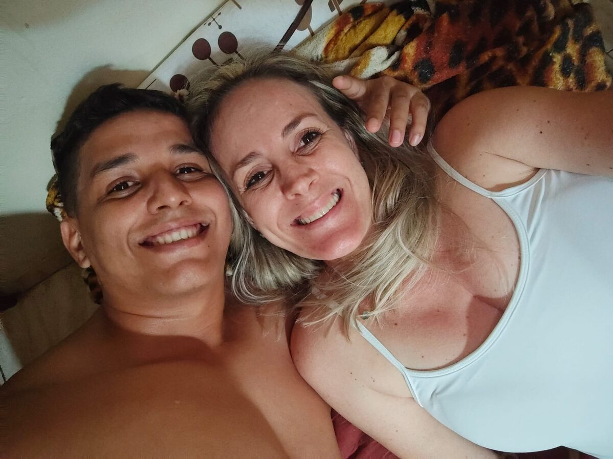
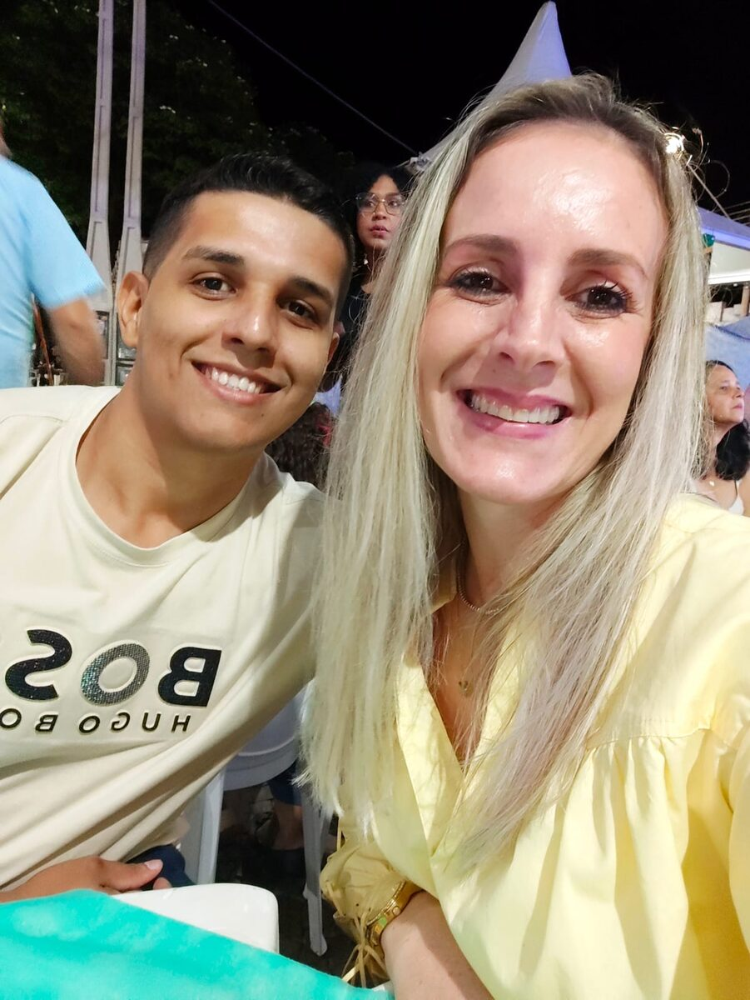
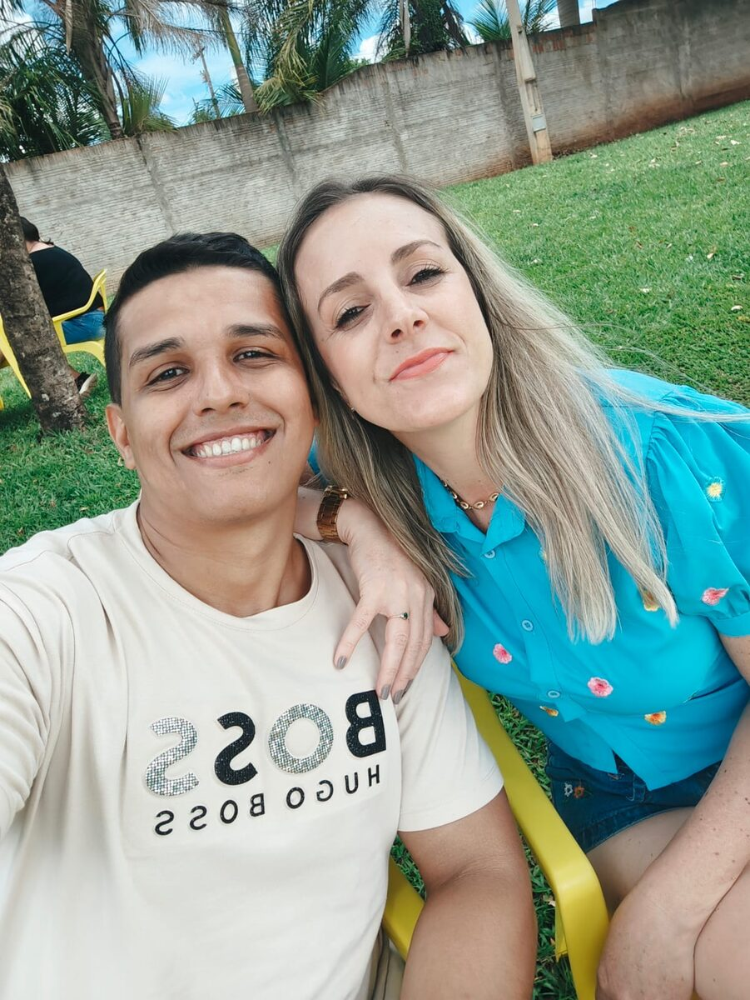
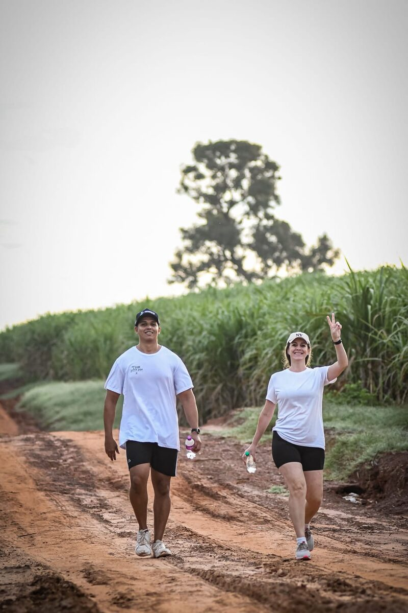
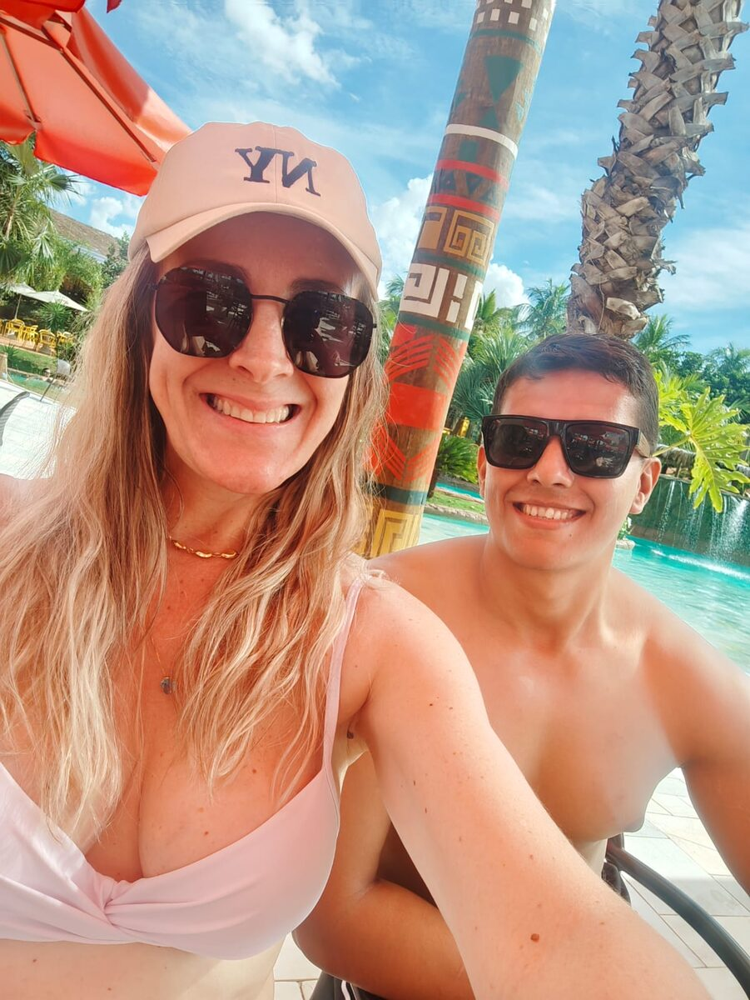
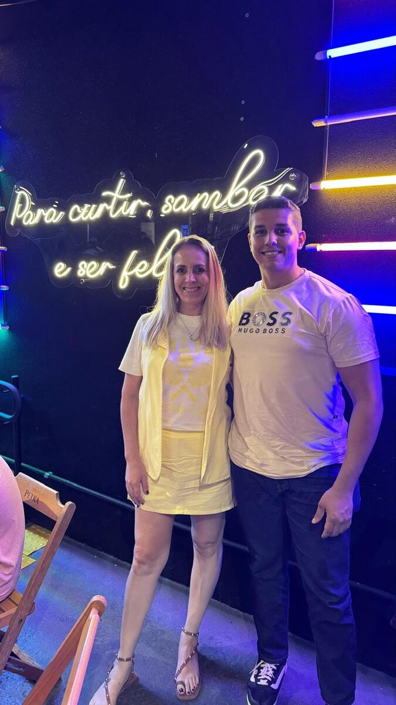
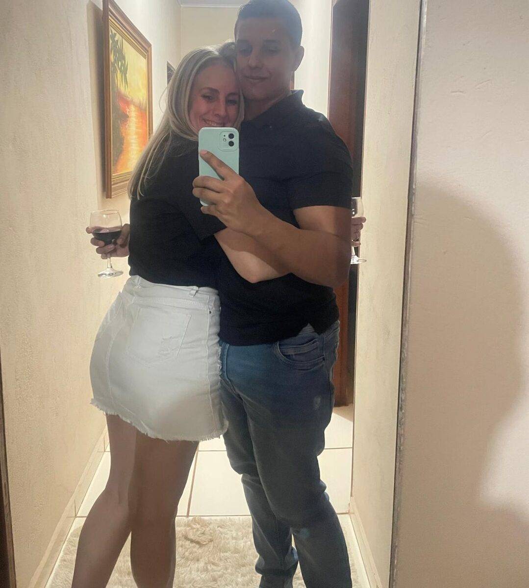
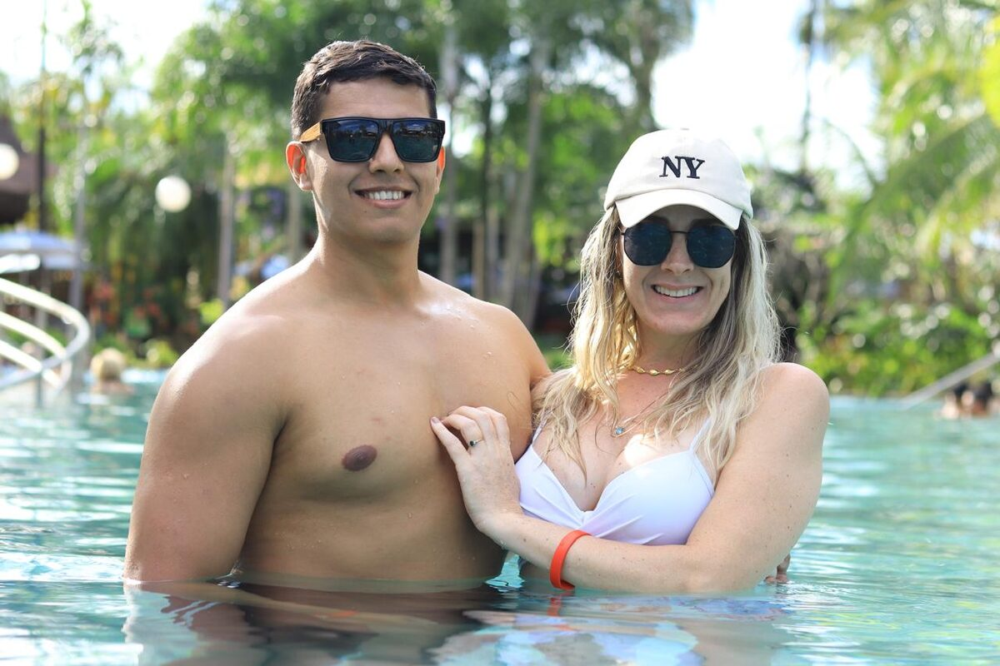

Dia dos Namorados · 2026
Oi, meu amor.
Eu fiz essa página só pra você. Respira fundo e vem comigo.
Vitor & Patrícia
role para baixo
O começo de tudo
Um beijo mudou os meus dias
Desde aquele 24 de outubro, eu conto o tempo de um jeito diferente:
0dias
0horas
0minutos
0segundos
Do meu coração
Patrícia, do seu sorriso ao jeito que você fala das coisas que ama, tudo em você me faz querer ficar perto.
Cada dia ao seu lado virou o meu lugar favorito. E eu não quero mais contar esses dias soltos — eu quero contar eles como nossos.
com todo o meu amor, Vitor
Nós dois
Alguns dos meus momentos preferidos








A trilha sonora da gente
Nossa música
Always — Bon Jovi
na versão de piano · tocando agora pra você
E é por isso que eu preciso te perguntar…